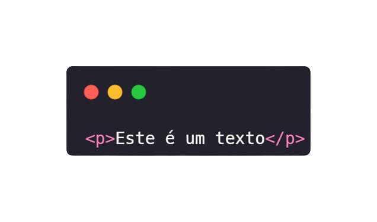
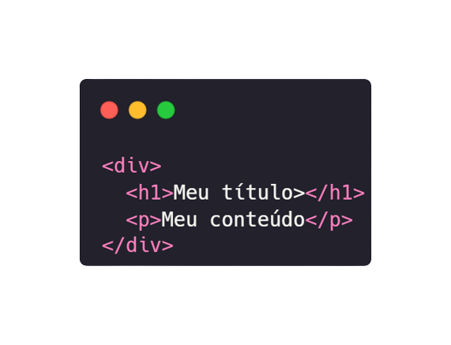
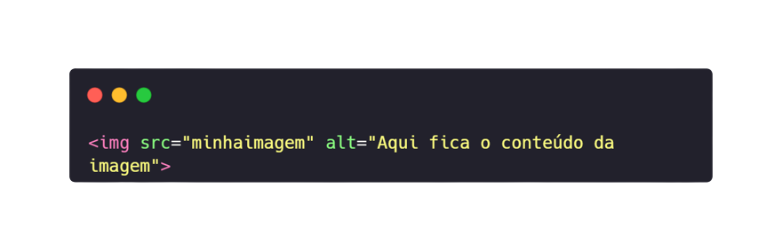
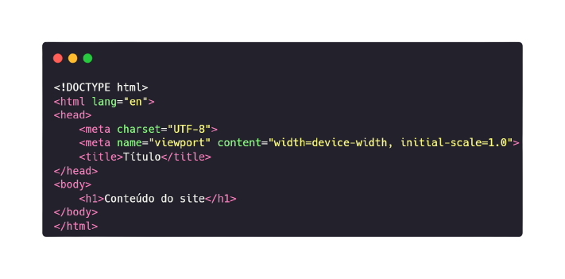
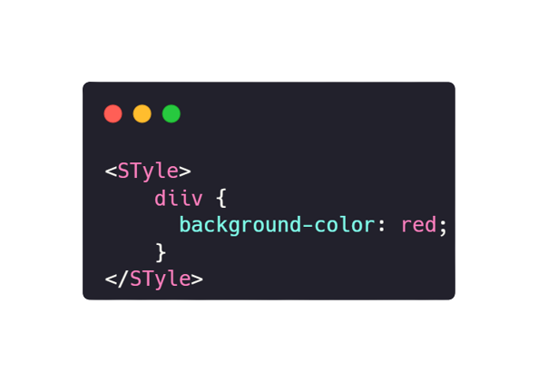

HTML
O que é HTML?
HTML (HyperText Markup Language) é a linguagem padrão para criar páginas web. Ele descreve a estrutura de uma página web utilizando marcações.
- Acrônimo para Hypertext Markup Language.
- Uma linguagem para estudar o layout das páginas web.
- Não podemos realizar: if/else, loops, funções.
- Faz parte da tríade web: HTML, CSS e JS.
- Pode ser executada diretamente no navegador, não precisa de um setup.
- Toda página web tem sua composição HTML.
O que forma a estrutura?
A estrutura de um documento HTML é formada por elementos, que são representados por tags.
- Vamos criar elementos que são parecidos com os do Word, onde estruturamos um texto, exemplo:
- Títulos
- Parágrafos
- Listas
- Tabelas
- Imagens
Como executar HTML?
Para executar HTML, basta criar um arquivo com a extensão .html e abri-lo em um navegador web.
- Para executar HTML basta um navegador.
- Vamos criar o nosso código em algum editor de código, sugiro o VS Code.
- Salvar o arquivo do projeto com a extensão .html.
- E abrir este arquivo pelo navegador, copiando o seu caminho relativo.
O que são tags?
Tags são usadas para criar elementos HTML. Elas são representadas por nomes entre colchetes angulares, como <div> ou <p>.
- Os elementos do HTML são escritos através de tags.
- Temos uma sintaxe semelhante para quase todas elas.
- Sintaxe é a forma de como é codificado algo em uma linguagem de programação.
- Exemplo:

- Esta tag cria um parágrafo no nosso site.
Os atributos do HTML
Atributos fornecem informações adicionais sobre elementos HTML. Eles são especificados na tag de abertura e geralmente consistem em pares nome/valor.
- Atributos são como opções especiais para configurar determinadas tags.
- Exemplo:

- Esta tag gera um elemento clicável, que nos leva até uma outra página.
- E o link desta página é determinado pelo atributo href.
Encadeamento (nesting)
Encadeamento se refere a colocar elementos HTML dentro de outros elementos HTML, criando uma hierarquia.
- Encadeamento, também chamado de nesting, é quando adicionamos um elemento dentro de outro.
- Uma técnica importante do HTML, para criar sessões, exemplo:

- Aqui temos uma div com um título e um parágrafo, ambos encadeados.
Tags sem fechamento
Algumas tags HTML não requerem uma tag de fechamento. Exemplos incluem <br> e <img>.
- Há tags que não possuem fechamento.
- Geralmente é quando ela não tem conteúdo.
- Um exemplo é a imagem, veja:

- Os atributos configuram a tag completamente.
- Inserindo o caminho da imagem (src) e uma descrição (alt)
Estrutura básica do HTML
Um documento HTML básico inclui a declaração do tipo de documento, uma tag <html>, uma tag <head> e uma tag <body>.
<!DOCTYPE html>
<html>
<head>
<title>Título da página</title>
</head>
<body>
<h1>Cabeçalho</h1>
<p>Parágrafo de texto</p>
</body>
</html>
- Todo documento de HTML tem uma estrutura muito semelhante, composta por tags essenciais, exemplo:

CSS
O QUE É CSS?
CSS (Cascading Style Sheets) é uma linguagem utilizada para estilizar elementos HTML em uma página web.
- CSS é uma linguagem de estilização.
- Um acrônimo para Cascading Style Sheets.
- Frequentemente utilizada junto com HTML.
- Podemos posicionar elementos, criar animações, e reproduzir um layout na web.
- Pode ser executada diretamente no navegador, não precisa de setup.
A sintaxe do CSS
A sintaxe do CSS consiste em um seletor e um bloco de declarações. Cada declaração inclui uma propriedade e um valor.
seletor {
propriedade: valor;
}
- Para estilizar elementos vamos sempre seguir alguns passos.
- Escolher a tag (por meio do nome, classe ou id).
- Abrir e fechar chaves, delimitando o espaço dos estilos do elemento.
- Escrever as regras de estilização.
- Todas as regras devem terminar com um ponto e vírgula(;).

Formas de adicionar CSS
- Temos três formas muito utilizadas para inserir CSS em uma página:
- Inline: utilizando o atributo
style diretamente no elemento HTML. Onde o CSS fica na tag.
- Interno: dentro de uma tag
<style> no documento HTML. Onde o CSS fica no head da página.
- Externo: vinculando um arquivo CSS externo usando a tag
<link>. Onde o CSS fica em um arquivo externo.
- Está última forma é mais indicada, e devemos sempre tentar utilizá-la.
Seletores de CSS
Seletores são utilizados para selecionar elementos HTML que queremos estilizar. Exemplos incluem seletores de tag, classe, e ID.
- Temos formas além das tags de selecionar elementos.
- Por classes: quando queremos afetar mais elementos com uma regra.
- Por id: quando queremos afetar um único elemento.
- Estas formas são referentes aos atributos class e id.
- Há uma convenção no HTML que não nos permite adicionar mais de um elemento com o mesmo id em uma página.
Positions do CSS
O CSS permite definir o posicionamento dos elementos na página usando propriedades como static, relative, absolute, fixed e sticky.
- Fluxo do HTML: A posição dos elementos, seguindo a ordem das tags.
- Static: Posição padrão dos elementos.
- Relative: Posição que podemos modificar as direções.
- Absolute: Pode se referenciar pela tela ou por algum elemento.
- Fixed: Posição que fixa o elemento na tela.
- Sticky: Uma mistura de fixed com relative.
Exemplos
Grid CSS
O Grid Layout é um sistema bidimensional para criar layouts de grade complexos. Ele utiliza contêineres e itens de grade.
- Um recurso do CSS que permite desenvolver layouts em grid.
- É um valor da propriedade display.
- Trabalhos com um container que contém itens.
- O container controla a disposição dos itens, mas os itens também podem alterar o seu posicionamento.
- Os grids são divididos em colunas e linhas.
- Podemos inserir um espaçamento entre as áreas com o recurso de gap.
Exemplos
FlexBox
O Flexbox Layout é um modelo unidimensional para distribuir itens em uma interface, oferecendo controle sobre o alinhamento e a distribuição do espaço entre os itens.
- É um valor para a regra display do CSS, que modifica a disposição dos elementos.
- Utilizamos desta maneira - display: flex.
- O flex precisa ser inserido em um container, que contém elementos.
- Há duas direções: row e column
- Podemos também alterar o posicionamento de um item individualmente.
- É possível alterar o alinhamento dos elementos, a até a ordem
Exemplos